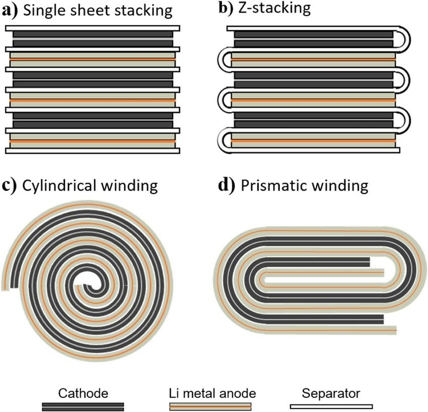
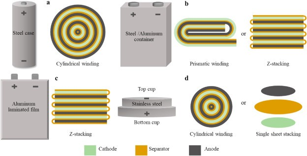
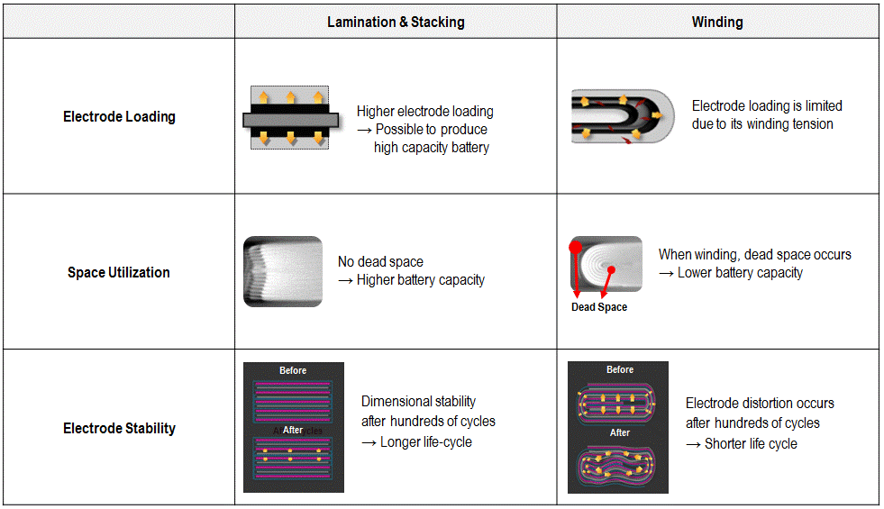
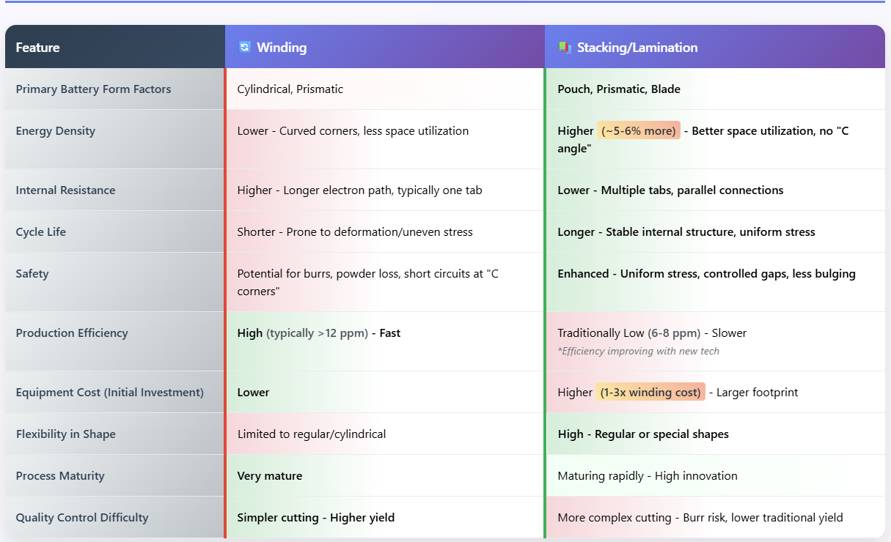
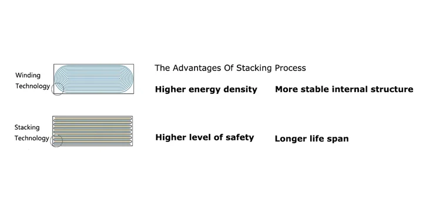
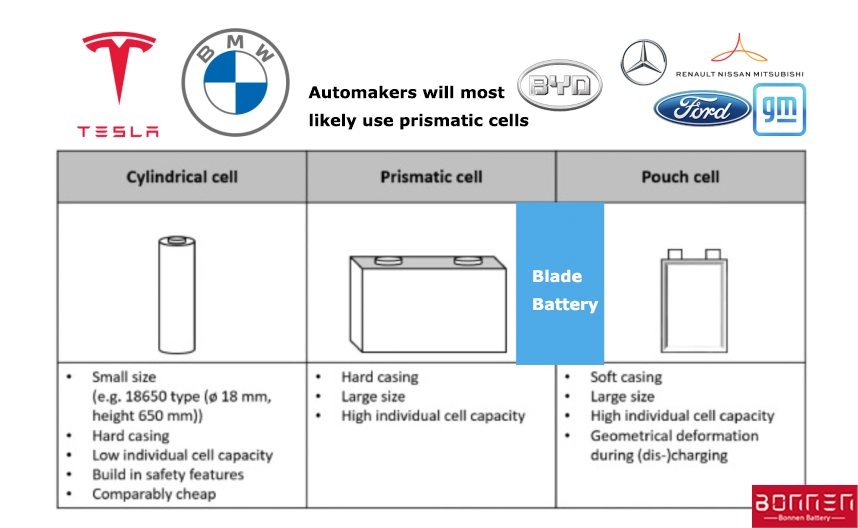
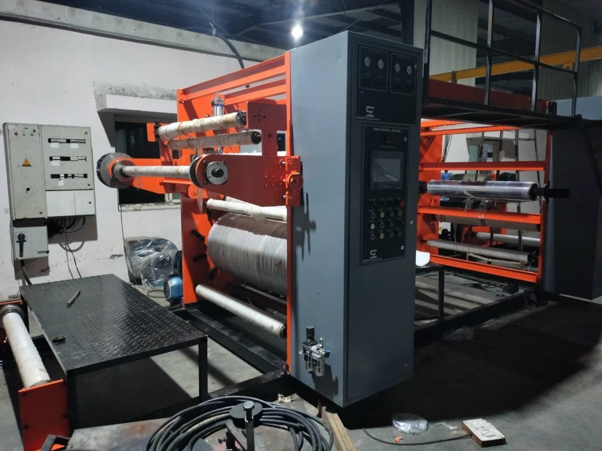
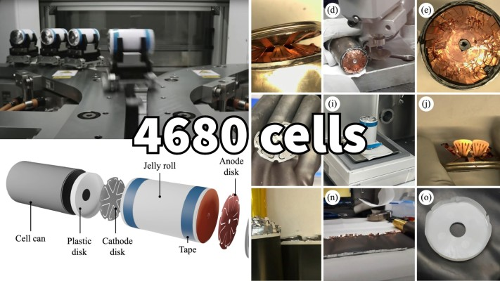

The global battery industry is experiencing unprecedented growth, with annual battery demand surpassing 1 terawatt-hour in 2024 and manufacturing capacity reaching 3 TWh. As we advance into 2025, three critical manufacturing processes—winding, stacking, and lamination—are shaping the future of battery cell production, each offering unique advantages for different applications and performance requirements.
Central to cell assembly are two primary electrode assembly techniques: winding and stacking. Lamination, often closely associated with stacking, refers to the crucial process of bonding these layered materials to create a stable, integrated structure.
Understanding the Three Core Manufacturing Processes
Winding: The "Jelly Roll" Foundation
Winding technology represents the foundational method in lithium-ion battery cell assembly. The process involves rolling positive electrode sheets, negative electrode sheets, and separators together through specialized winding machines equipped with winding needle mechanisms. This creates what's known as a "jelly roll" structure, where the adjacent positive and negative electrode sheets are isolated by separators to prevent short circuits.
The winding process is characterized by several key features:
- High Efficiency: Winding offers superior process speed and simplicity compared to alternative methods.
- Mature Technology: Cylindrical cells consistently utilize winding technology due to its established reliability.
- Cost-Effective Production: The streamlined process enables high-volume manufacturing with lower initial investment.
Modern winding machines incorporate advanced features including active unwinding of electrode materials, automatic tension detection and control, and automated quality inspection systems. The equipment typically achieves efficiency rates of 6 parts per million with qualification rates exceeding 99.5%.

Stacking Technology: The Precision Alternative
Stacking technology takes a fundamentally different approach by cutting electrode sheets into precise dimensions and stacking them layer by layer with separators in between. This process, also known as Z-stacking, follows a specific sequence: negative electrode, separator, positive electrode, separator, and so forth.
The stacking process offers several compelling advantages:
- Superior Energy Density: Stacking can increase energy density by approximately 5% compared to winding by optimizing space utilization.
- Enhanced Thermal Management: The layered structure enables more uniform heat distribution during operation.
- Lower Internal Resistance: Multiple tabs in parallel configuration reduce internal resistance by 10-15%.
- Improved Safety: The stable internal structure minimizes risks of structural failure and short circuits.
Recent innovations in stacking technology include electromagnetic positioning systems that use eddy currents to precisely position and fix electrodes without contact, significantly reducing process time and preventing damage.

Lamination: The Bonding Process
Lamination serves as a critical complementary process that creates stable, durable structures by layering different materials together under controlled heat and pressure. The lamination process typically operates at temperatures between 80-120°C and pressures of 5-15 MPa.
The lamination process delivers several performance enhancements:
- Enhanced Electrode Interface Bonding: Hot pressing eliminates micro-gaps between electrodes and separators, increasing charge/discharge efficiency by 20-30%.
- Improved Structural Integrity: The process locks electrodes in optimal alignment, achieving 98.5% first-pass yield rates.
- Reduced Internal Impedance: Air-purging mechanisms during lamination lower internal impedance by 12-18%.

Winding vs. Stacking/Lamination: A Strategic Comparison

Comparative Analysis: Performance and Applications
Energy Density and Efficiency Comparison
The choice between winding and stacking significantly impacts battery performance characteristics. Stacking technology demonstrates superior performance in several key metrics:
- Internal Resistance: Stacking cells exhibit lower internal resistance due to parallel welding of multiple tabs, while winding cells rely on single-tab current output
- Cycle Life: Stacking cells show 10-15% longer cycle life compared to wound cells due to more stable electrode structures
- Rate Capability: Stacking achieves enhanced rate performance through parallelized current pathways from multiple electrode layers

Application-Specific Preferences
Different battery form factors favor specific manufacturing approaches:
- Cylindrical Cells: Exclusively use winding technology due to geometric requirements and manufacturing maturity
- Prismatic Cells: Transitioning from winding to stacking, with Chinese manufacturers leading this shift
- Pouch Cells: Employ both technologies depending on manufacturer preference and application requirements
- Blade Cells: Specifically designed and produced using stacking processes

Equipment and Manufacturing Considerations
Advanced Winding Equipment
Modern winding machines feature sophisticated control systems including AC servo motor drives, tension control unwinding, and real-time monitoring capabilities. Key performance indicators for winding equipment include:
- Winding speed optimization
- Tension fluctuation control (typically <±3%)
- Alignment precision (<±0.3mm)
- Automated quality inspection and defect sorting
Stacking Machinery Innovation
Cell stacking machines represent advanced automation technology that operates through precise feeding, alignment, stacking, compression, and output processes. These machines utilize advanced sensors and robotic arms to ensure accurate cell orientation while minimizing errors and maximizing production speed.
Hot Pressing and Lamination Equipment
Hot pressing equipment enables the synergistic effects of elevated temperature and controlled pressure to enhance battery performance. The process requires precise temperature control systems to ensure uniform heating and prevent diaphragm micropore closure, which could increase internal resistance.

Industry Trends and Future Outlook
The Shift Toward Stacking
Industry analysis reveals a significant trend toward stacking technology, particularly for high-rate applications. Leading lithium battery companies are increasingly adopting stacking methods for large-capacity square, blade, and pouch batteries. The stacking technique has emerged as the second major technological direction in lithium batteries, with penetration rates continuously increasing.
Emerging Manufacturing Trends
Several key trends are shaping the future of battery manufacturing through 2025:
Dry Electrode Processing: The transition to dry battery electrode (DBE) processing offers reduced energy requirements, smaller factory footprints, and lower production costs. Tesla's adoption of DBE for 4680 cells represents a significant industry shift, with projected demand reaching 72 GWh by 2025.
Automation and AI Integration: Manufacturing lines increasingly incorporate artificial intelligence and digital twin technologies to optimize production efficiency and quality control.
Sustainable Manufacturing: Growing emphasis on recycling, debond-on-demand technologies, and bio-based materials is reshaping production processes.

Performance Optimization
Recent studies demonstrate that hot-pressed batteries achieve 15% higher discharge capacity under high-rate conditions compared to non-pressed counterparts. This performance improvement, combined with manufacturing efficiency gains, positions lamination as an increasingly critical process step.
Challenges and Opportunities
Manufacturing Challenges
Each technology faces specific challenges:
- Winding: Issues with electrode deformation at bending points and uneven current distribution during discharge
- Stacking: Lower qualified rates for electrode slitting and higher overall manufacturing costs
- Lamination: Precise temperature and pressure control requirements to prevent material degradation
Market Opportunities
The battery industry's rapid expansion creates significant opportunities for manufacturing innovation. Global battery manufacturing capacity could triple over the next five years if all announced projects proceed. This growth, combined with falling battery prices below $100 per kilowatt-hour, positions advanced manufacturing technologies as critical competitive advantages.
Conclusion: The Integrated Future
The future of battery cell manufacturing lies not in choosing a single technology, but in optimizing the integration of winding, stacking, and lamination processes based on specific application requirements. As the industry moves toward higher energy densities, improved safety, and cost-effective production, manufacturers are developing hybrid approaches that leverage the strengths of each technology.